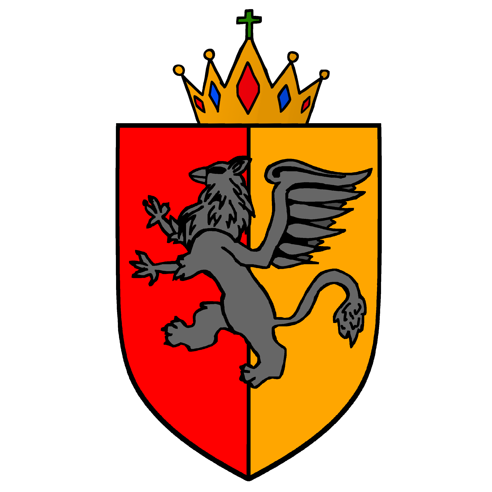
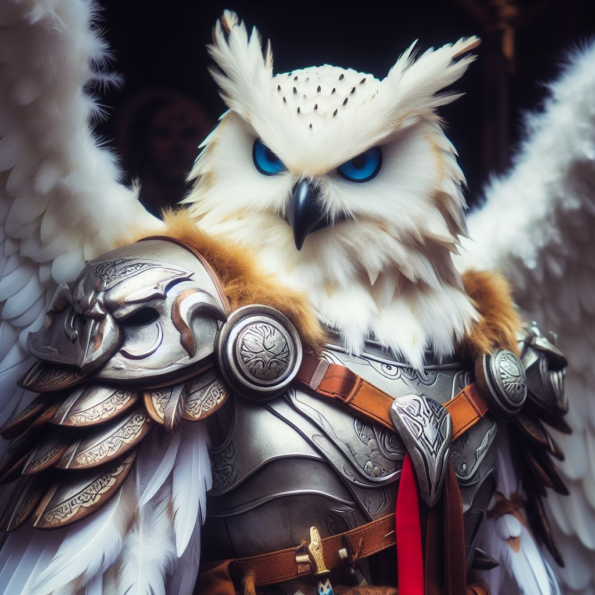

Członkowie

Krul Artur I Gryfion
Krul Multikont, przewodniczący Rady
Demokratyczny Tata Świnka
Wielki Diuk

Puchacz Potężny
Lord Marszałek
Archadius Błękitny Smok
Lord-Dowódca Korpusu Dyplomatycznego
Żydowski Tata Świnka
Lord Kanclerz
Kapitalistyczny Tata Świnka
Lord Kwestor

Emanuel Atrupovic
Lord Minister Edukacji i Rodziny